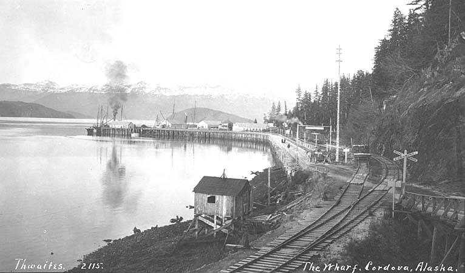
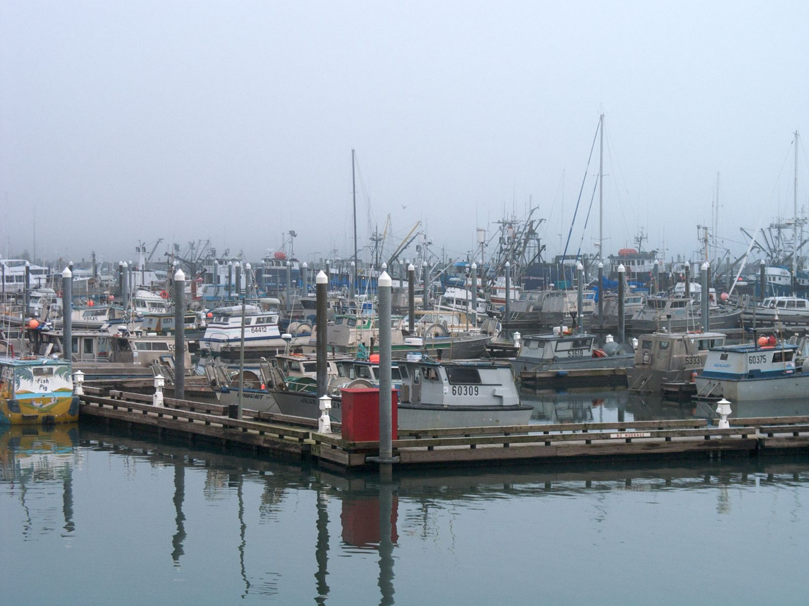

Directory / Southcentral Alaska / Cordova, AK
Cordova tides — Orca Inlet & the small boat harbor
High and low tides for the coming week from NOAA station 9454050 (Cordova, Orca Inlet — 60.5583, -145.753; on NOAA chart 16710). Times are local (AKST/AKDT). Heights are feet above Mean Lower Low Water (MLLW). Cordova sits on Orca Inlet at the southeast corner of Prince William Sound, at the foot of Mount Eyak. No road connects it to the rest of Alaska, so people and freight arrive by ferry, plane, or boat. It is home port for the Copper River gillnet fleet and Prince William Sound seiners, and it has one of the largest single-basin small boat harbors in Alaska.
Big tides, the grids & the run to the flats
Use the big tides at the grid. The city harbor has two tidal grids: a 160 ft light-duty grid and a 180 ft heavy-duty grid. Grid fees are charged per tide on the 2025 harbor fee schedule. In the NOAA predictions fetched 2026-11-12, the largest swing in the next five weeks is on Wednesday, November 25, 2026: a 15.9 ft high at 1:02 PM, then a −2.9 ft low at 7:51 PM. That is a drop of about 18.8 ft. Evening minus tides come every night from Nov 22 through Nov 29, and again from Dec 6 through Dec 12. All of them fall after dark this time of year.
Too big for the grid? The city runs a 150-ton travel lift and shipyard. Book at least 24 hours ahead with a signed haul-out agreement and pay in advance. You supply your own blocking, tarp, and tools. Smaller trailer boats can use Cordova Outboard’s launch and haul-out service.
Inside vs. outside. NWS forecasts Central and Eastern Prince William Sound (PKZ725) apart from the outer coast, Cape Suckling to Gravel Point out to 15 NM (PKZ710), which includes the waters off the Copper River Delta. In the forecast issued 2:30 PM AKST Thu Nov 12, 2026, the Sound called for 10 kt and 2 ft seas into Friday night. At the same time, the outer coast had a Small Craft Advisory for Friday and Friday night, with 9 ft seas building to 17 ft by Monday. Check both zones below before you run the flats or Hinchinbrook Entrance.
Computed from NOAA CO-OPS hi/lo predictions for 9454050 (2026-11-13 through 2026-12-18), the NWS coastal waters forecast text, and City of Cordova harbor pages, fetched 2026-11-12 AKST. Not for navigation.
Cordova then & now
Historic

.jpeg){kind=link}
Current


Official NOAA predictions Station home NOAA chart viewer View on Windy
Port Sponsor — Cordova, AK
Top placement for fuel docks, marinas, yards, and marine businesses.
$25–$50 / month
Friday, November 13, 2026
| Tide | Time (local) | Height (MLLW) |
|---|---|---|
| High | 3:46 AM | 10.5 ft |
| Low | 9:06 AM | 5.2 ft |
| High | 2:46 PM | 12.6 ft |
| Low | 9:51 PM | 0.7 ft |
Saturday, November 14, 2026
| Tide | Time (local) | Height (MLLW) |
|---|---|---|
| High | 4:31 AM | 10.0 ft |
| Low | 9:49 AM | 5.7 ft |
| High | 3:22 PM | 11.8 ft |
| Low | 10:35 PM | 1.4 ft |
Sunday, November 15, 2026
| Tide | Time (local) | Height (MLLW) |
|---|---|---|
| High | 5:28 AM | 9.6 ft |
| Low | 10:39 AM | 6.0 ft |
| High | 4:05 PM | 10.9 ft |
| Low | 11:23 PM | 2.0 ft |
Monday, November 16, 2026
| Tide | Time (local) | Height (MLLW) |
|---|---|---|
| High | 6:35 AM | 9.5 ft |
| Low | 11:38 AM | 6.1 ft |
| High | 5:10 PM | 10.0 ft |
Tuesday, November 17, 2026
| Tide | Time (local) | Height (MLLW) |
|---|---|---|
| Low | 12:14 AM | 2.5 ft |
| High | 7:35 AM | 9.9 ft |
| Low | 12:47 PM | 5.9 ft |
| High | 6:48 PM | 9.4 ft |
Wednesday, November 18, 2026
| Tide | Time (local) | Height (MLLW) |
|---|---|---|
| Low | 1:10 AM | 2.9 ft |
| High | 8:24 AM | 10.5 ft |
| Low | 2:02 PM | 5.2 ft |
| High | 8:11 PM | 9.4 ft |
Thursday, November 19, 2026
| Tide | Time (local) | Height (MLLW) |
|---|---|---|
| Low | 2:09 AM | 3.2 ft |
| High | 9:05 AM | 11.4 ft |
| Low | 3:13 PM | 3.9 ft |
| High | 9:18 PM | 9.7 ft |
Friday, November 20, 2026
| Tide | Time (local) | Height (MLLW) |
|---|---|---|
| Low | 3:08 AM | 3.3 ft |
| High | 9:42 AM | 12.3 ft |
| Low | 4:09 PM | 2.3 ft |
| High | 10:16 PM | 10.3 ft |
Tide data: NOAA CO-OPS station 9454050, predictions (hi/lo, MLLW, local standard/daylight time). Refreshed with each nightly build; the marine-weather snapshot time below shows the latest fetch. Currents: the nearest NOAA current station in our port list is PWS0734 (Old Log Boom, about 3 km away), a 2007 Prince William Sound survey station — see NOAA current predictions.
Marine weather & cameras
NWS marine forecast — Central and Eastern Prince William Sound (PKZ725)
Issued 230 PM AKST Thu Nov 12 2026. Snapshot fetched 2026-11-12 21:09 AKST from NWS text product. Official zone forecast · Raw text
- .TONIGHT...E wind 10 kt. Seas 2 ft.
- .FRI...NE wind 10 kt. Seas 2 ft.
- .FRI NIGHT...NE wind 10 kt. Seas 2 ft.
- .SAT...NE wind 20 kt. Seas 4 ft.
- .SAT NIGHT...NE wind 15 kt. Seas 3 ft.
- .SUN...E wind 20 kt. Seas 4 ft.
- .MON THROUGH TUE...E wind 15 kt. Seas 3 ft.
NWS marine forecast — Cape Suckling to Gravel Point out to 15 NM (PKZ710)
Issued 230 PM AKST Thu Nov 12 2026. Snapshot fetched 2026-11-12 21:09 AKST from NWS text product. Official zone forecast · Raw text
...SMALL CRAFT ADVISORY FRIDAY AND FRIDAY NIGHT...
- .TONIGHT...E wind 15 kt. Seas 7 ft.
- .FRI...N wind 15 kt. Seas 9 ft.
- .FRI NIGHT...NE wind 15 kt. Seas 9 ft.
- .SAT...E wind 25 kt. Seas 9 ft.
- .SAT NIGHT...NE wind 20 kt. Seas 9 ft.
- .SUN...E wind 20 kt. Seas 12 ft.
- .MON...SE wind 20 kt. Seas 17 ft.
- .TUE...E wind 20 kt. Seas 12 ft.
Nearby NDBC observation — Cordova (CRVA2, NOAA 9454050)
wind 120°, 1 kt, gust 2 kt, air 37°F, 998.6 hPa, water 46°F
Observation time 2026-11-12 20:30 AKST (converted to AKST). Attribution: NOAA NDBC station CRVA2. Snapshot fetched 2026-11-12 21:09 AKST.
Nearby NDBC observation — West Orca Bay buoy (46060)
wind 70°, 8 kt, gust 10 kt, air 42°F, 998.6 hPa, water 47°F
Observation time 2026-11-12 20:40 AKST (converted to AKST). Attribution: NOAA NDBC station 46060. Snapshot fetched 2026-11-12 21:09 AKST.
Nearby NDBC observation — Seal Rocks buoy (46061, Hinchinbrook Entrance)
wind 40°, 4 kt, gust 8 kt, 998.9 hPa
Observation time 2026-11-12 20:30 AKST (converted to AKST). Attribution: NOAA NDBC station 46061. Snapshot fetched 2026-11-12 21:09 AKST.
Harbor webcams
- FAA WeatherCams — Cordova / Merle K. (Mudhole) Smith Airport (PACV) (free public cameras looking east, southeast, and southwest over the Copper River Delta; may read “image not available” in winter darkness; link only, not embedded)
We could not find a working free public camera on the small boat harbor itself. The old city harbor cam page returned an error on 2026-11-12. Harbor businesses with a public cam: email us and we will link it.
Cordova boater notes (official links)
- City of Cordova Port & Harbor: Harbormaster office staffed 7 days, 8 AM–5 PM, on VHF 16 (working channel 68). Transient boats check in at the harbor office as soon as they tie up. Moorage and transient applications, parking permits, and the harbor map are on that page.
- 150-ton travel lift & shipyard rules: reservations, blocking, tarps, and disposal of paint chips and blast grit.
- Docks: the 408 ft Municipal Dock sits next to the Alaska Marine Highway dock; the 300 ft City Dock just outside the harbor entrance is for light freight and fishing gear; the T-Dock is home to the Coast Guard buoy tender SYCAMORE (City of Cordova).
- Alaska Marine Highway: ferry to Whittier and Valdez.
- ADF&G Prince William Sound commercial fisheries — Copper River District openers and announcements.
- NOAA ENC chart viewer (Orca Inlet is on NOAA chart 16710; we link to NOAA’s viewer and do not host charts).
Local marine & shore directory
Verified public listings only. List free · Get featured
Marine services
Moorage & marinas
Seafood processors & buyers
Fuel docks
Shipyards & haul-outs
Boat repair & mechanics
Marine suppliers & chandleries
Electronics sales & installation
No verified listing yet — list your business free.
Welding & fabrication
Canvas & upholstery
No verified listing yet — list your business free.
Surveyors
Towing & salvage
No verified listing yet — list your business free.
Ice & bait
No verified listing yet — list your business free.
Fishing charters
Ashore for boaters
Groceries & provisioning
Hardware
Liquor stores
Laundromats
Showers
Lodging
Restaurants
Medical clinics
Pharmacies
Post office & shipping
Airport & floatplane
Propane
No verified listing yet — list your business free.
Auto & truck rental
We checked these listings on 2026-11-12 against each business's own site or a public directory: the City of Cordova Port & Harbor and shipyard pages, the ADF&G 2025 list of Prince William Sound shore-based processors, the Copper River Boats processor and industry contact lists (updated August 2026), 60° North Seafoods, Shoreside Petroleum, Cordova Outboard, LFS, Cordova Net Supply, Alaska Commercial Company, Cordova Community Medical Center, Ilanka Community Health Center, Ridgeline Aviation and its Cordova information sheet, and public business listings. Silver Bay Seafoods now runs the former Ocean Beauty/OBI plant. Most processor lines are seasonal and may not answer in winter. Basic listings are free; a Featured listing is $10/month or $100/year. For corrections or a free listing, contact J.L. Miller at pacifictides.ak@gmail.com (email only).
Local news — Cordova, AK
Plain links to local outlets. Always check the source for the latest. Local news partners welcome.
Free weekly tides & marine weather
Get a short email for your port. We do not sell your email. Privacy.
Mailing list powered by Buttondown.
Boating gear on Amazon
As an Amazon Associate I earn from qualifying purchases.
Helpful search links for common gear. Prices and availability are on Amazon.
Other Alaska ports
Sources
- NOAA CO-OPS station 9454050 — Cordova, Orca Inlet (MDAPI name Cordova; lat 60.5583, lng -145.753; chart 16710; verified 2026-11-12)
- Nearby currents reference: PWS0734 Old Log Boom (2007 survey station; not plotted on this page)
- Predictions API:
api.tidesandcurrents.noaa.gov/api/prod/datagetter(product=predictions, interval=hilo, datum=MLLW, time_zone=lst_ldt) - NWS coastal waters forecast zones PKZ725 Central and Eastern Prince William Sound and PKZ710 Cape Suckling to Gravel Point out to 15 NM (zones confirmed via api.weather.gov zone lookup)
- NDBC observations: CRVA2 Cordova (NOAA 9454050), 46060 West Orca Bay buoy, 46061 Seal Rocks buoy
- City of Cordova Port & Harbor, travel lift & shipyard, and 2025 fee schedule (checked 2026-11-12)
- Directory:
data/businesses.csvrows for port_slug=cordova, each with its public source URL (verified 2026-11-12) - Photos: John E. Thwaites / University of Washington Libraries (public domain); Sam Beebe/Ecotrust (CC BY-SA 3.0) via Wikimedia Commons. Graphics: original Pacific Tides artwork.